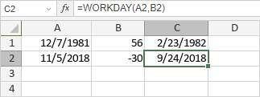

WORKDAY funkcija
Funkcija WORKDAY je jedna od funkcija za datum i vreme. Koristi se za vraćanje datuma koji dolazi nakon ili pre određenog broja dana (offset dana) u odnosu na dati početni datum, isključujući vikende i datume koji se smatraju praznicima.
Sintaksa
WORKDAY(start_date, days, [holidays])
WORKDAY funkcija ima sledeće argumente:
| Argument | Opis |
|---|---|
| start_date | Prvi datum perioda unet pomoću DATE funkcije ili druge funkcije za datum i vreme. |
| days | Broj radnih dana pre ili posle start_date. Ako days ima negativan predznak, funkcija vraća datum koji prethodi određenom start_date. Ako days ima pozitivan predznak, funkcija vraća datum koji sledi nakon određenog start_date. |
| holidays | Opcioni argument koji određuje koji datumi pored vikenda nisu radni. Možete ih uneti pomoću DATE funkcije ili druge funkcije za datum i vreme, ili kao referencu na opseg ćelija koje sadrže datume. |
Napomene
Kako primeniti WORKDAY funkciju.
Primeri
Na slici ispod prikazan je rezultat koji vraća WORKDAY funkcija.
